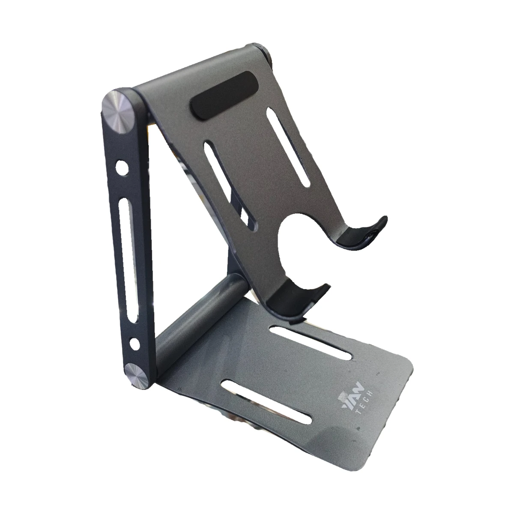

CONECTATECH · Producción visual
SOPO060 — Soporte T8-02 para celular y tablet
Fotografía propia autorizada. Nuevo acabado con edición asistida por IA: iluminación, limpieza y presentación comercial. Sin caja. Variante gris oscuro; articulaciones, ranuras, apoyos y logotipo contrastados con las fotos reales.
Anterior
Nuevo acabado comercial
Modelo e información comercial conservados. PROMO CONTADO $10,84 · PVP $12,47. El registro del catálogo clasifica este SKU como accesorio genérico. No se utiliza fotografía externa.
Abrir ficha del producto